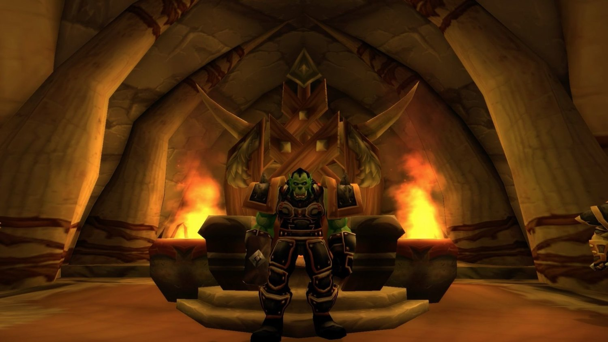
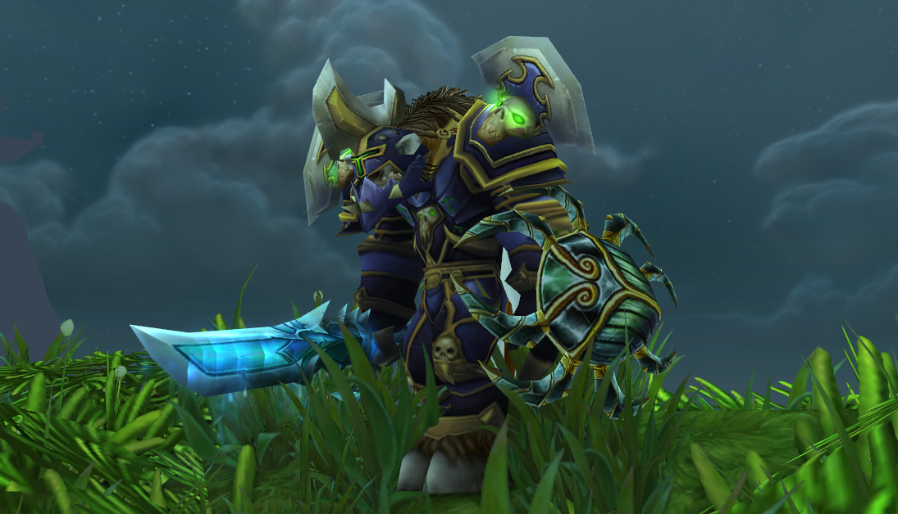

Avant le lancement!
World of Warcraft (abrégé WoW) est un jeu vidéo de type MMORPG (jeu de rôle en ligne massivement multijoueur) développé par la société Blizzard Entertainment. C'est le 4e jeu de l'univers médiéval-fantastique Warcraft, introduit par Warcraft: Orcs and Humans en 1994. World of Warcraft prend place en Azeroth, près de quatre ans après les événements de la fin du jeu précédent, Warcraft III: The Frozen Throne1 Blizzard Entertainment annonce World of Warcraft le 2 septembre 20012. Le jeu est sorti en Amérique du Nord le 23 novembre 2004, pour les 10 ans de la franchise Warcraft. La première extension du jeu, The Burning Crusade, est sortie le 16 janvier 20073. La deuxième extension, Wrath of the Lich King, est sortie le 13 novembre 20084. La troisième, Cataclysm, est sortie le 7 décembre 2010. La quatrième extension, Mists of Pandaria, est sortie le 25 septembre 20125. La cinquième extension, Warlords of Draenor, est sortie le 13 novembre 20146. La sixième extension, Legion est sortie le 30 août 2016. La septième extension, Battle for Azeroth, est sortie le 14 août 2018. Depuis sa sortie, World of Warcraft est le plus populaire des MMORPG. Le jeu tient le Guinness World Record pour la plus grande popularité pour un MMORPG7,8,9,10. En avril 2008, World of Warcraft a été estimé comme rassemblant 62 % des joueurs de MMORPG11. Le 7 octobre 2010, Blizzard annonce que plus de 12 millions de joueurs ont un compte World of Warcraft actif12. C'est à partir de fin 2012 que World of Warcraft commencera à perdre continuellement un nombre croissant de joueurs. Au dernier trimestre 2012, Blizzard annonce le nombre de 9,6 millions d’abonnés à travers le monde, puis 7,7 millions pour le 2e trimestre 2013. World of Warcraft a fêté son 10e anniversaire en novembre 2014. Le mois suivant, à la suite de la sortie de l'extension Warlords of Draenor, Blizzard annonce que World of Warcraft repasse le cap des 10 millions d'abonnés.
Le jeu reprend place dans le monde imaginaire d’Azeroth, et dont le cadre historique se situe quatre ans après les évènements concluant Warcraft III. Le joueur choisit son personnage parmi huit, dix ou douzeNote 4 treize puis vingt-et-une races disponibles divisées en deux factions : l’Alliance et la Horde. Ainsi, si l’Alliance permet d’incarner un Humain, un Nain, un Gnome ou un Elfe de la Nuit, côté Horde ce sera un Orc, un Troll, un Tauren (une sorte de minotaure) ou encore un Mort-vivant. Avec l’arrivée de la première extension du jeu en janvier 2007 , nommée The Burning Crusade, chacune des factions est désormais dotée d’une nouvelle race : les Elfes de Sang pour la Horde et les Draeneï pour l’Alliance. Deux races sont rajoutées dans l’extension Cataclysm, les Gobelins dans la Horde et les Worgens (des sortes de loups-garous) dans l’Alliance. Depuis l'extension Mist of Pandaria, les Pandarens sont implantés en tant que race neutre pouvant choisir librement son affiliation Alliance ou Horde. Enfin, l'extension Battle for Azeroth (sortie en août 2018) introduit huit nouvelles races alliées jouables : les Draeneï Sancteforge, les Elfes du Vide, les Nains Sombrefer et les Humains de Kul Tiras côté Alliance, et les Taurens de Haut-Roc, les Sacrenuit, les Orcs Mag'har et les Trolls Zandalari côté Horde.  En plus du choix de la race de son personnage et de son apparence, la personnalisation comprend le choix d’une classe parmi les neuf suivantes : Guerrier, Mage, Voleur, Prêtre, Chasseur, Druide, Démoniste, Paladin et Chaman. Une 10e classe, appelée classe héroïque, est ajoutée avec l’extension Wrath of the Lich King : le chevalier de la Mort. Une 11e classe est ajoutée depuis la sortie de l'extension Mists of Pandaria: le Moine et une 12e classe sera ensuite ajoutée avec l'extension Legion : le Chasseur de démons. Les joueurs sont également invités à développer leurs compétences dans différents métiers (2 métiers principauxNote 5 maximum et 3 ou 4 métiersNote 6 secondaires aussi appelés compétences). On compte aujourd'hui comme métiers principaux le travail du cuir, l'ingénierie, le dépeçage, le minage, la forge, l'herboristerie, l'alchimie, l'enchantement, la joaillerie, la calligraphie et la couture. Les métiers secondaires sont le secourisme, la pêche, la cuisine et l'archéologie (le secourisme a été supprimé dans Battle for Azeroth ; dorénavant les bandages et autres sont fabriqués à partir de la couture). World of Warcraft reprend en partie l'univers de Warcraft puisqu'on peut y retrouver quelques héros de la saga, tels que Arthas Menethil, Archimonde, Thrall ou encore Illidan Hurlorage. Le jeu, caractéristique des autres licences de Blizzard, établit une synthèse de la plupart des idées du genre sans apporter de réelles innovations mais en perfectionnant les éléments actuels et en l’équilibrant au maximum. Pour cela, Blizzard a créé des équipes de localisation dans les pays où le jeu est distribué afin qu’elles puissent traduire le jeu de manière intégrale (dans certains cas, seulement la notice) et d’y apporter en permanence des mises à jour et modifications. Blizzard a également fait en sorte que son jeu puisse bénéficier d’une accessibilité supérieure à la moyenne et puisse être utilisable sur la plupart des ordinateurs ayant jusqu’à cinq ans d’âge. World of Warcraft se distingue aussi des autres MMORPG par le souci des développeurs de ne pas lasser les joueurs occasionnels par un système d’aide à l’acquisition de niveaux13 : un joueur occasionnel, ou « casual », pourra disposer d’un « bonus » lui permettant de gagner deux fois plus d’expérience en tuant des monstres. Plus l’avatar reste à l’auberge (ou dans une capitale), plus il se sentira « reposé » et bénéficiera de ce bonus ; beaucoup de quêtes peuvent être effectuées seul ; il existe aussi un outil donjon aléatoire qui permet de trouver un groupe de donjon en 5-10 minutes qui permettent de gagner beaucoup d’expérience en peu de temps (20 minutes maximum) et le gain d’expérience est encore plus grand si on est « reposé ».
Si vous voulez en apprendre plus sur l'histoire du monde de Warcraft je vous invite a visioner cette video (anglais).